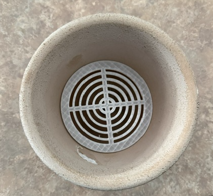
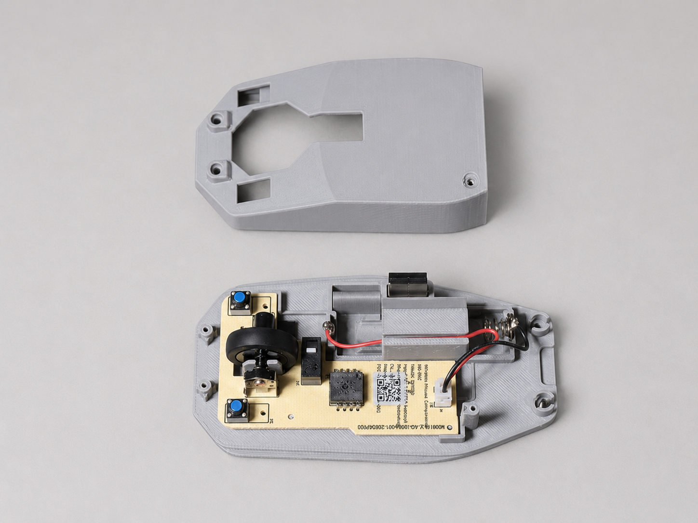
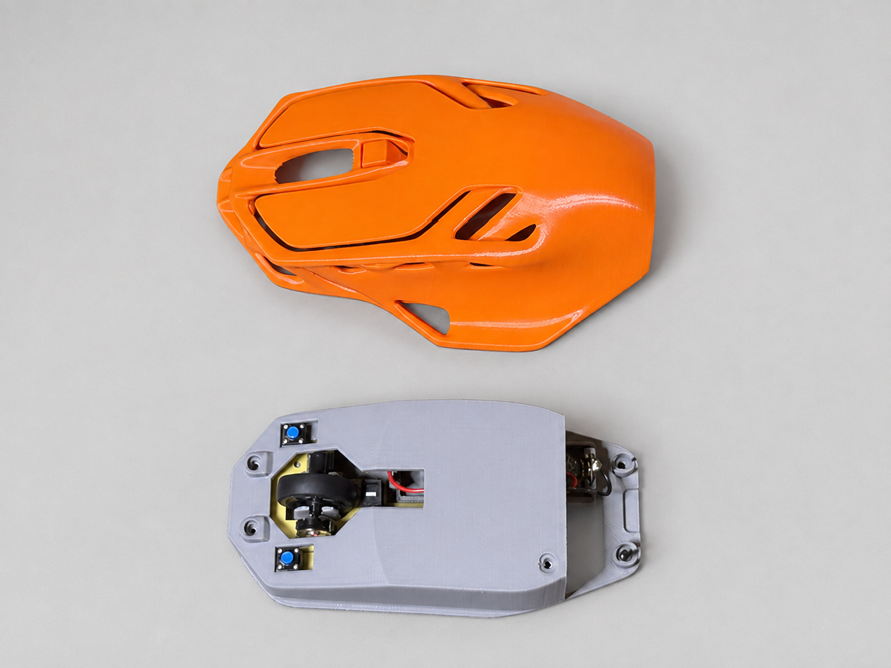

Projects and Evidence
Complete project records supporting the Digital Maker and Fabrication and Robotics and Embedded Systems programs. Each record keeps its photographs, CAD images, drawings, documents, testing results, and video links together.
Project Portfolio Overview
Each project below documents the progression from a problem or design requirement through modeling, fabrication, programming, testing, revision, and evaluation. Links at the end of each record show where the project is mapped to the Boards objectives.
Videos are provided as external-view buttons rather than embedded players. This keeps the page organized and prevents several videos from loading at once.
Perpetual Planter



Project Overview
The Perpetual Planter is a reusable insert that converts a standard six-inch clay pot into a passive water reservoir. The design is intended to reduce overwatering, underwatering, and root rot without requiring the user to replace an existing planter.
The insert separates the lower reservoir from the growing medium while continuing to support the soil and plant above it. Water remains available beneath the plant instead of collecting directly around the roots.
Design and Development
Fusion 360 was used to create the insert, internal mesh, support geometry, and parametric dimensions. Multiple mesh-disc versions were produced as the design was refined. Structural simulation was used to determine whether the part could support the expected load and whether it contained more material than necessary.
The simulation showed a high safety factor. This confirmed that the concept was strong enough while also identifying a future opportunity to reduce material, printing time, weight, and production cost.
Patent and MVP Development
The project documents an original functional product, the problem it addresses, its manufacturing method, use cases, revisions, and possible variations. The first MVP remained focused on the passive reservoir. Electronic monitoring and communication features were intentionally reserved for later versions.
Tools and Techniques
- Fusion 360 CAD and parametric modeling
- Structural simulation
- Additive-manufacturing preparation
- Iterative prototype development
- MVP planning and patent-readiness documentation
Future Development
- Reduce unnecessary material identified by simulation
- Test the insert in commercially available planters
- Compare PLA, PETG, and more water-resistant materials
- Develop additional diameters and reservoir depths
- Add optional water-level and moisture monitoring
Screw School / Screw Stack


Project Overview
Screw Stack is a modular system for organizing leftover screws by size. Each tray contains openings for a specific screw diameter and stacks with other trays. The design reduces mixed hardware and replaces multiple loose snap-lid containers.
Design, Manufacturing, and Testing
The trays were designed in Fusion 360, prepared in Bambu Studio, and printed on a Bambu P1P. The system includes screw openings, printed labels, stacking pegs, and removable connectors. Multiple versions were manufactured and tested with actual screws.
PLA and PETG were evaluated for flexibility and repeated use. Production tests revealed disconnected geometry, labels that disappeared during slicing, and slots requiring deeper fillets. These failures directly guided later revisions.
Tools and Techniques
- Fusion 360 and Bambu Studio
- Bambu P1P additive manufacturing
- PLA and PETG material evaluation
- Fit, assembly, labeling, and hardware testing
- 3D-printing and CNC-process comparison
Modular Launch Glider


Project Overview
The Modular Launch Glider is a 3D-printed aircraft developed around aerodynamic form, assembly, manufacturability, and launcher integration. It includes separate wings, a connector beam, tail assembly, stabilizers, and a launcher body.
Form, Materials, and Construction
The glider had to remain aerodynamic while being printable and easy to assemble. Development considered print orientation, joining methods, wall thickness, launch forces, strength, weight, alignment, handling, and repair. Digital simulation identified stress concentrations and likely failure points.
Tools and Techniques
- Fusion 360 component-based assemblies
- Technical drawings and dimensional documentation
- Aerodynamic and modular-product design
- Structural simulation
- Additive-manufacturing planning
Ergonomic Mouse Build




Project Overview
This project involved designing and building a custom ergonomic computer mouse around a Bambu Lab mouse components kit. The kit supplied the electronics and controls, while the upper shell and lower enclosure were modeled and manufactured to create a complete working mouse.
The enclosure was shaped to provide a more comfortable hand position while maintaining access to the primary buttons, scroll wheel, side controls, sensor, power switch, and battery compartment.
Design and Component Fitment
Fusion 360 was used to develop the enclosure geometry around the dimensions and placement requirements of the supplied components. Internal mounting points, openings, clearances, and wire-routing areas were incorporated into the model so the electronics could be installed without interfering with the moving controls.
Bambu Studio was used to prepare the enclosure parts for additive manufacturing. After printing, the components were test-fitted and the enclosure was evaluated for assembly, control movement, electronics clearance, and overall comfort.
Ergonomic Considerations
The upper shell uses a raised and rounded profile intended to support the user’s palm and provide a natural grip. The location of the controls and openings was maintained while the exterior form was adjusted to improve comfort and give the finished mouse a distinct appearance.
Tools and Techniques
- Fusion 360 enclosure design
- Bambu Studio print preparation
- Bambu Lab mouse components kit integration
- Additive manufacturing
- Electronic-component fitment and assembly
- Ergonomic and human-factors evaluation
- Prototype testing and revision
Four-Gear Mechanism


Project Overview
The Four-Gear Mechanism is a manually operated mechanical system containing separate 12-, 24-, 36-, and 48-tooth gears arranged on a custom mounting plate. The project demonstrates gear creation, mechanical spacing, rotational movement, and the transfer of motion through a connected gear train.
Mechanical Design
Each gear and the mounting plate were modeled in Fusion 360. The required center distance between adjacent gears was calculated from the pitch diameter and radius of each gear so the teeth would engage without binding or separating.
Revolute joints and motion links were used to test the assembly digitally before the components were manufactured. This made it possible to evaluate the direction and relative speed of each gear before completing the physical mechanism.
Manual Operation and Testing
The finished mechanism is operated manually by rotating the input gear. That movement transfers through the remaining gears and produces a predictable change in direction and rotational speed. The physical assembly was tested for gear engagement, alignment, clearance, and smooth movement.
The completed project demonstrates the mechanical function without using motors, electronic controls, sensors, or automated feedback. Its operation depends entirely on manual input and the physical relationship between the gears.
Tools and Techniques
- Fusion 360 gear creation and assembly
- Gear-ratio and center-distance calculations
- Revolute joints and motion links
- Mounting-plate design
- Additive manufacturing
- Manual mechanical operation
- Physical fitment and movement testing
Gaia ESP32 Enclosure Monitor
Components
Add the ESP32, sensor, OLED, resistor, and wiring photograph here.
Breadboard Test
Add the working breadboard circuit photograph here.
Status: Circuit operational.
Fusion 360 Housing
Add the enclosure and OLED-faceplate images after final fit testing.
Status: Faceplate development in progress.
Working Monitor
Add the completed monitor displaying a live temperature reading here.
Status: Sensor and OLED working.
Project Overview
The Gaia ESP32 Enclosure Monitor is a compact environmental-monitoring node for a terrarium or bioactive enclosure. The MVP measures temperature and displays the current reading locally.
Embedded System
The system uses an ESP32-WROOM-32, DS18B20 digital temperature sensor, and 0.96-inch SSD1306 OLED. The ESP32 receives and processes sensor data before displaying the temperature. A custom housing protects the electronics while allowing the sensor to be positioned inside the enclosure.
Status: Working prototype; final faceplate and enclosure in development.
Components and Techniques
- ESP32-WROOM-32 microcontroller
- DS18B20 temperature sensor and pull-up resistor
- SSD1306 128×64 OLED display
- OneWire sensor communication and I2C display output
- USB power and custom Fusion 360 housing
Future Development
- Add humidity and soil-moisture monitoring
- Add microSD data logging
- Add relay-controlled environmental equipment
- Add LoRa communication between enclosure nodes
- Connect multiple nodes to the Gaia dashboard
Project C2: Capillary Canopy
Project C2 is maintained on the SIP page because it contains its own full development timeline, prototype revisions, testing results, technical drawings, and final SIP documentation. Keeping that material together preserves one complete record without duplicating its evidence here.